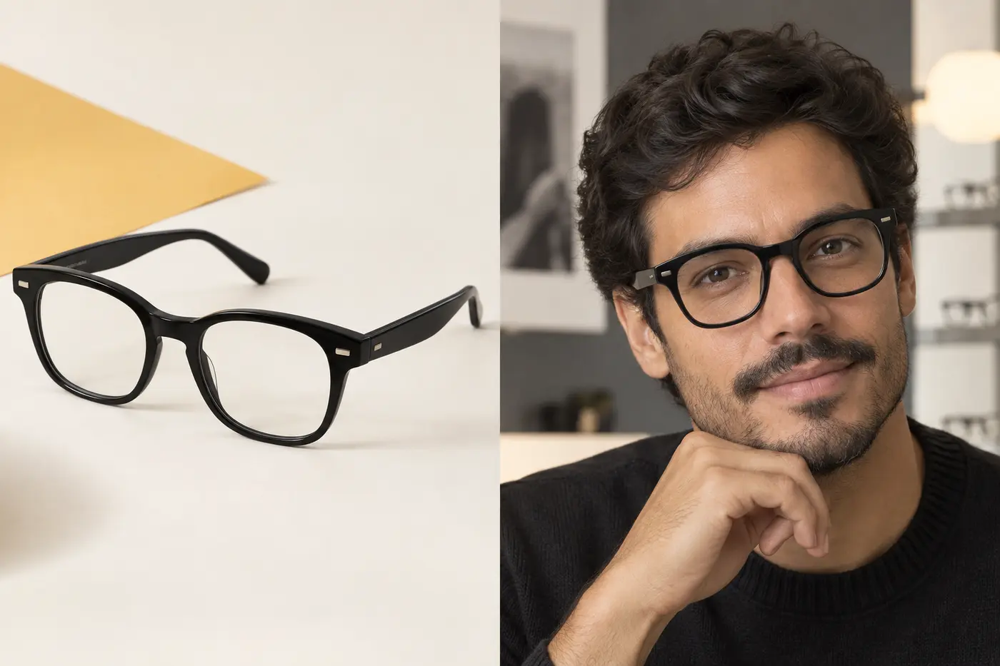
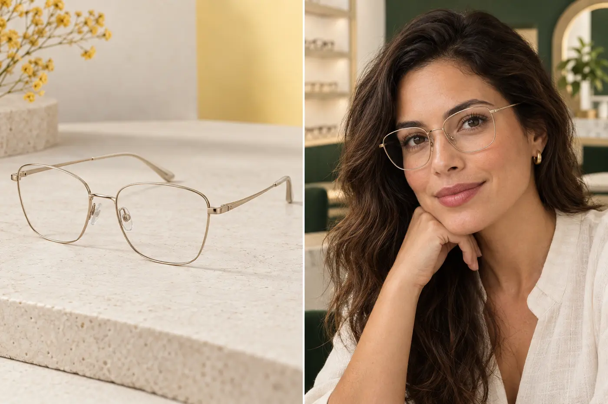
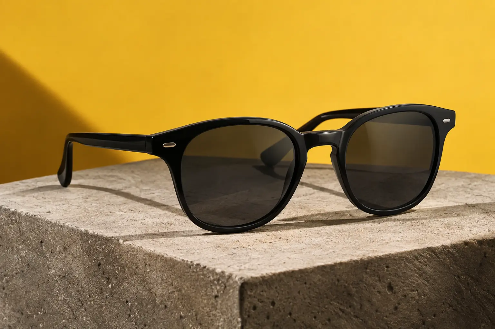

ARMAÇÃO01 · REFERÊNCIA DE CURADORIA
Acetato essencial
Linhas definidas para quem procura presença, versatilidade e um visual contemporâneo.
Consultar opções parecidasÓCULOS DE GRAU · CURADORIA VITALES
Encontre uma armação para acompanhar sua rotina e conte com nossa equipe para entender as opções de lentes para sua receita.
Você pode escolher a armação antes de apresentar sua receita.
VITALES · RECEITUÁRIO
Clareza para escolher.VITALES PERTO DE VOCÊ
01 — COMECE PELO QUE VOCÊ GOSTA
Explore referências de estilo e leve sua escolha para o atendimento. A equipe confirma modelos, medidas, valores e disponibilidade na sua unidade.
Imagens de inspiração — não representam catálogo ou estoque em tempo real.

ARMAÇÃO01 · REFERÊNCIA DE CURADORIA
Linhas definidas para quem procura presença, versatilidade e um visual contemporâneo.
Consultar opções parecidas
ARMAÇÃO02 · REFERÊNCIA DE CURADORIA
Traços delicados e acabamento discreto para uma presença elegante durante todo o dia.
Consultar opções parecidas
DETALHE03 · VITALES SOLAR
Proteção e personalidade para completar o visual sem perder a assinatura Vitales.
Consultar opções solares02 — SUA ESCOLHA, SEM COMPLICAÇÃO
Você não precisa chegar sabendo qual armação ou lente escolher. Comece pelo que faz sentido para o seu estilo e deixe a parte técnica com a nossa equipe.
Começar meu atendimentoVeja estilos, materiais e proporções que chamam sua atenção.
A equipe orienta o canal disponível e verifica as informações necessárias.
Entenda as lentes, os tratamentos, o valor total, o prazo e as condições.
Depois de escolher uma referência, fale com a equipe. Ela informa como apresentar sua receita e se alguma medida precisa ser confirmada presencialmente.
Você pode conhecer as armações e entender o processo. Para obter ou atualizar a prescrição, procure um profissional habilitado.
Sua receita não é solicitada nesta página. Dados de saúde exigem um canal apropriado e orientação clara da equipe.
03 — CLAREZA EM CADA DECISÃO
Compare materiais e tratamentos — como antirreflexo e proteção UV — quando disponíveis para a lente orçada.
Tirar dúvidas sobre lentesArmação, lentes, tratamentos, prazo e condições devem estar claros antes da aprovação.
Pedir orientaçãoConsulte ajustes e as condições de adaptação e garantia aplicáveis à sua compra.
Consultar condições04 — PREPARE SUA CURADORIA
Essas respostas ajudam a preparar seu atendimento. Não são um teste de rosto, diagnóstico ou garantia de ajuste.
05 — ONDE ESTAMOS
Experimente com calma e confirme os detalhes da sua visita com a equipe antes de sair.
LONDRINA
PARANÁRua Uruguai, 1717 · Lojas 3 e 4
Centro · CEP 86010-210
CAMPO GRANDE
MATO GROSSO DO SULRua Treze de Maio, 2484 · Loja 3
Centro · CEP 79002-356
CAXIAS DO SUL
RIO GRANDE DO SULRua Vinte de Setembro
Centro · Caxias do Sul — RS
SALVADOR
BAHIA · EM BREVENova unidade Vitales
Inauguração em 26 de setembro de 2026
ATENDIMENTO ESPECIALIZADO
Prepare uma mensagem com sua cidade e o que procura. Depois, copie e abra o perfil oficial da Vitales para iniciar o atendimento.
Para manter o contato seguro, esta página direciona ao perfil oficial da Vitales. Canais adicionais podem ser confirmados diretamente com a unidade.
Nenhuma referência selecionada.
Nenhuma mensagem é enviada automaticamente. Não inclua sua receita ou outros dados de saúde no texto público desta página.
06 — PERGUNTAS FREQUENTES
Sim. Você pode começar pelo estilo e conversar com a equipe. A confirmação final considera sua receita, as medidas necessárias e a compatibilidade da armação.
Após iniciar o atendimento, a equipe orienta o canal disponível ou o atendimento presencial. Esta página não recebe arquivos de receita.
Você não precisa decidir sozinho. A equipe explica as opções e os tratamentos disponíveis considerando sua receita e sua rotina antes de montar o orçamento.
As imagens são referências de curadoria. Consulte a equipe para confirmar modelos semelhantes, medidas, valores e estoque na unidade escolhida.
As condições podem variar conforme o produto e o pedido. Peça à equipe as regras aplicáveis antes de aprovar a compra.
Sim. Prepare sua mensagem, escolha a unidade e confirme os dados com o perfil oficial antes da visita.
VITALES, DO SEU JEITO
Comece por uma referência e deixe a equipe ajudar na parte técnica.
Ver armações